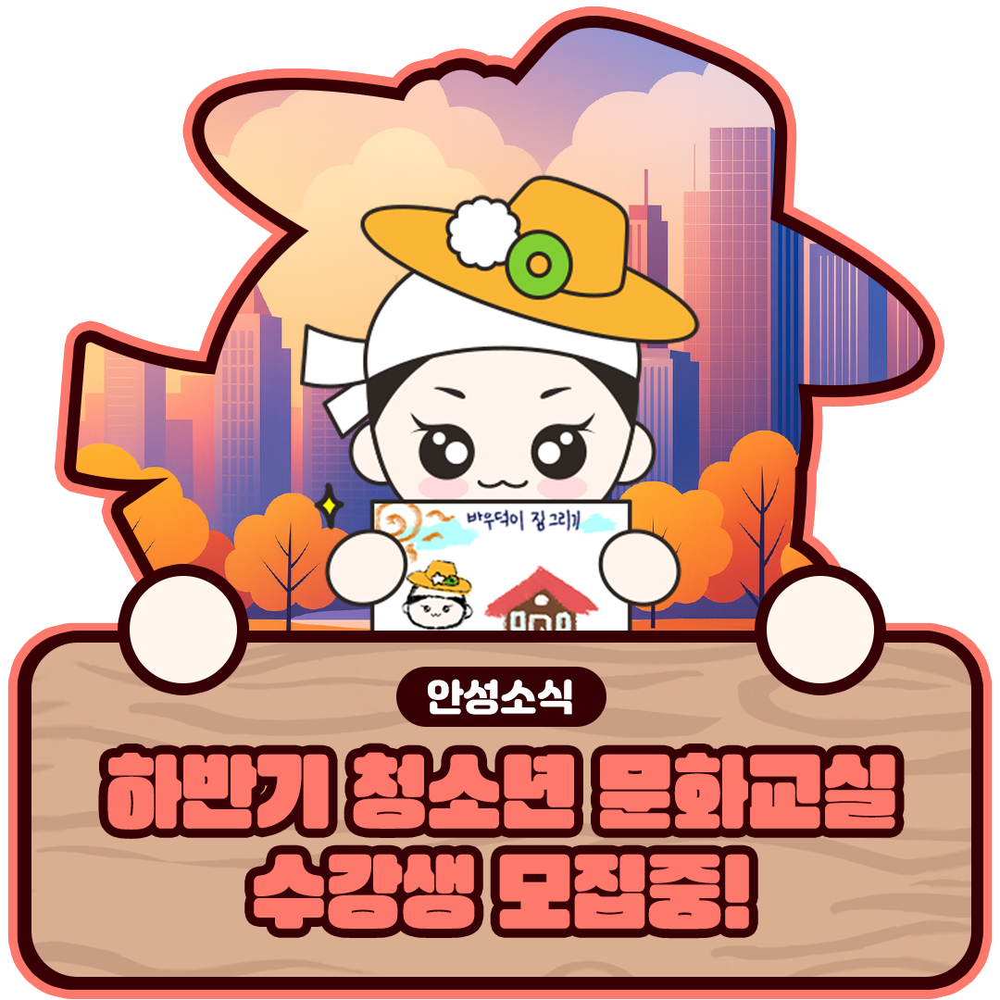
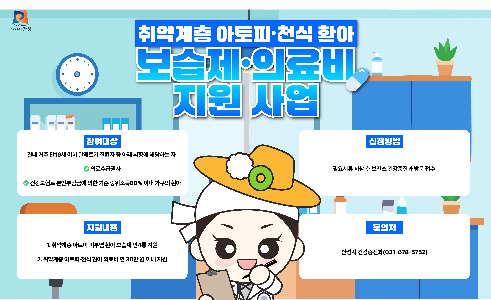
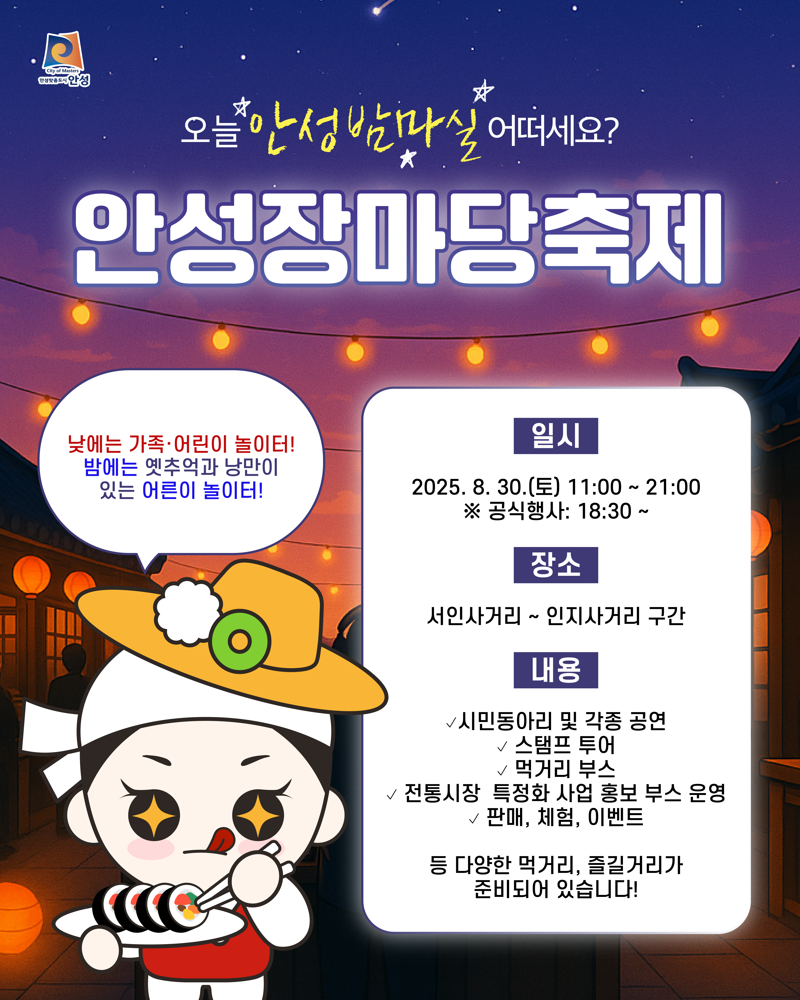
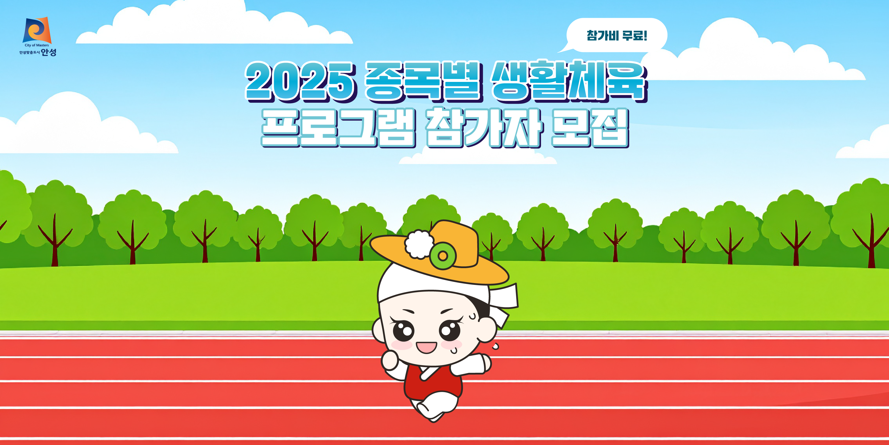
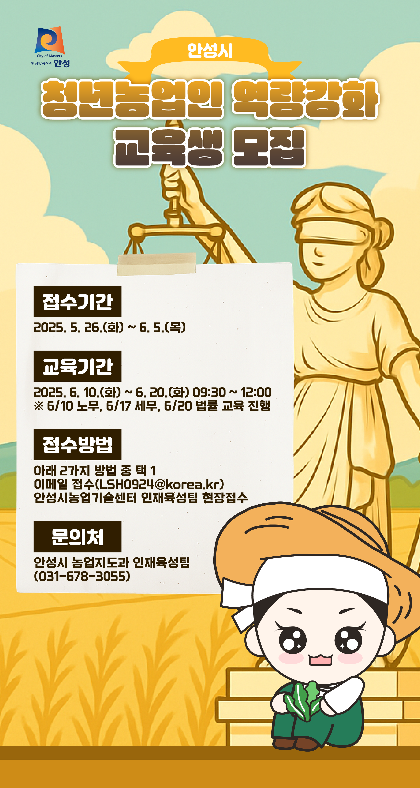

안성시청을 위한 일관된 비주얼 캠페인을 디자인했습니다. LED 전광판 레이아웃, 카카오톡 배너 이미지, 인스타그램 카드뉴스, 블로그 썸네일 등 다양한 매체를 포함합니다.
전광판 · 카드뉴스 · 2024-2025
안성시청 기관업무
시민에게 가까이 가는 공공 디자인 캠페인. 안성시청의 각종 사업과 축제를 알리기 위한 통합 비주얼 캠페인입니다. 시민의 일상에 자연스럽게 스며드는 카드뉴스, 포스터, 디스플레이 디자인을 제작했습니다.

복잡한 행정 정보를 지역 시민들이 쉽게 이해할 수 있도록 친근하고 명확하게 전달하는 것을 목표로 했습니다.
시청 커뮤니케이션 팀과 긴밀히 협력하여 정책 정보를 시각적으로 효과적으로 전달하는 시스템을 구축했습니다.
Main Visuals
작업물 구성

① 카드뉴스 (1080×1080)
안성시의 청소년 문화교실 프로그램을 알리기 위한 카드뉴스입니다. 친근한 캐릭터와 나무 간판 모티브를 사용해, 안내문을 '공고문'이 아닌 '초대장'처럼 느껴지게 했습니다.
- SNS에 최적화된 정사각형 비율 (1080×1080)
- 청소년과 학부모 모두에게 친숙한 일러스트 톤
- 장소·일시·대상 정보를 한눈에 읽을 수 있는 정보 구조

② 블로그 썸네일 (1200×630)
보슬제·의료비 지원 사업을 알리는 블로그 썸네일입니다. 복잡한 정책 정보를 시민들이 쉽게 이해할 수 있도록 아이콘과 구조화된 레이아웃으로 시각화했습니다.
- 블로그 및 SNS 공유에 최적화된 가로 비율 (1200×630)
- 정책 정보를 아이콘과 박스로 구조화하여 가독성 향상
- 시청 캐릭터를 활용한 친근한 분위기 연출

③ 전광판 배너 (1728×1056)
안성장마당축제를 알리는 대형 전광판 배너입니다. 야시장 조명과 축제 분위기를 강조하여, 멀리서도 시선을 끄는 디자인으로 제작했습니다.
- 대형 디스플레이에 최적화된 고해상도 배너 (1728×1056)
- 야간 조명과 보라색 톤으로 축제의 설렘 강조
- 일시·장소·내용을 멀리서도 읽을 수 있는 큰 타이포그래피

④ 카톡광고 배너 (800×400)
2025 중동별 생활체육 프로그램 참가자 모집을 위한 카카오톡 광고 배너입니다. 밝고 활기찬 색상과 캐릭터를 활용하여 시민들의 참여를 유도하는 디자인으로 제작했습니다.
- 카카오톡 채널 광고에 최적화된 가로 배너 (800×400)
- 활동적인 캐릭터와 밝은 하늘 배경으로 건강한 이미지 연출
- 참가 무료 혜택을 강조하여 참여율 증대

⑤ 로비 디스플레이 (1920×1080)
안성시 청년동행인 역량강화 교육생 모집을 위한 대형 로비 디스플레이 포스터입니다. 정책의 전문성과 신뢰감을 유지하면서도 친근한 캐릭터로 청년층의 관심을 끌도록 디자인했습니다.
- 로비 및 공공장소 디스플레이에 최적화된 Full HD 해상도 (1920×1080)
- 역사적 모티브(정의의 여신)와 캐릭터를 조화롭게 배치
- 접수기간·교육기간·접수방법을 명확한 박스로 구분하여 가독성 최대화
Process
- 시청으로부터 핵심 메시지를 분석하고 간단한 헤드라인과 아이콘 기반 레이아웃으로 재구성
- 카드뉴스, 배너, 전광판이 공통 아이덴티티를 공유할 수 있는 유연한 그리드 시스템 구축
- 모바일과 대형 옥외 스크린 모두에서 텍스트가 읽기 쉽도록 타이포그래피와 색상 조정
- 여러 채널에 최적화된 다양한 포맷으로 디자인 자산 제작 및 납품
Highlights
- 다양한 채널(오프라인 및 온라인)에 최적화된 홍보 자산 전체 세트 제작
- 카카오, 인스타그램, 디지털 사이니지 전반에 걸쳐 통일된 비주얼 아이덴티티 유지
- 20개 이상의 캠페인 디자인 제작
- 시민 참여도 및 정보 전달 효과 향상
Gallery
이미지 아카이브